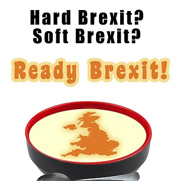

How to make economnic soup

Ingredients
- 13 year long Tory government
- Unelected Prime Minister
- Divisive and biased media
- Blatant corruption
- Pandemic
Instructions
- Place the Tories in power after Labour stuffed it
- Find out Cameron is into beastiality and also stuffed it
- Make Cameron hold a Brexit referendum by telling him we can get pig meat cheaper
- Take back control (from the people) via Cambridge Analytica
- Use Covid to head towards the most authoritarian government the UK has ever had
- Siphon taxpayer money to friends via PPE contracts
- Turn the poor and slightly less poor against eachother in the media
- Blame greedy junior doctors and landlords for the insane cost of living
- Mix in some support for Genocide
- Give boiling soup to labour